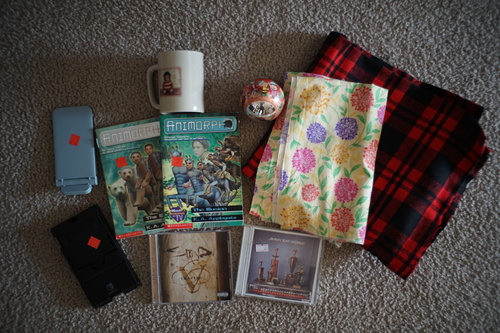

I've reorganized all my thrift photos and doll photos into folders and relinked everything. I'm mengomen for everything that is broken ;_; Email me (if you can!) if you find something broken.
Of course, the paid DLC for Xenoblade 3 features the 3 main boys plus Alvis. I'm very disappointed the ending of the series costs an extra $30. I'll buy it if they think it's worth releasing on a cart like Torna. Otherwise sh*t sux.
Splatoon 3 of course would have paid DLC. I haven't bought it yet, but if they release a cart with the DLC on it, I will get that. I just feel like I should be doing something better with my life than splatting for 400 hours again.
Decapolice looks cute!! I already have a crush on blondie. Paranormasight looks really pretty but I don't know if I need a horror game. Maybe I'll just keep an eye out for a sale. Atelier Marie is getting a remake!! That's really cool even if I don't intend to buy it.
Biggest sad of the show: new Zelda's price. Goodbye years of $60 Nintendo games. I will miss you dearly. If you factor in the paid DLC you'll need to finish the story, games will be $100 a pop! I'm not about this life.
Ryan took me to the thrift store. I don't want to go alone anymore because one of the unpaid helpers who is always there follows me and stares the entire time I'm in the store. It's more unpleasant than the cashier that would not stop talking to me last year.
Ryan wanted it
"you don't need every bear mug" -Ryan
A scrap of chrysanthemum print and ~1.5 yard of flannel. I want to make a winter skirt and a kimono out of it.
Ryan's. What exactly happens in these books...
I needed one of these when I was splatting constantly
Ryan's
I found a whole stack of CDs at the vintage store, sorted them down to 3 CDs, went to the register to find out I had missed the "$3 or as marked" part, and ended up with 1 CD. Morning View was there in my hands, but it was $4 and very scratched. I do NOT have the mysteriously appearing zoomer money to afford that.
Where are zoomers getting their money anyway? Almost all of clothes in that store is $30 - $100 and almost all of it is stuff I wouldn't buy for $5 at the thrift store. Who is paying $30 for a tacky print tee from 1992? The dude is constantly making sales on the stuff, which is good for him, but... why?